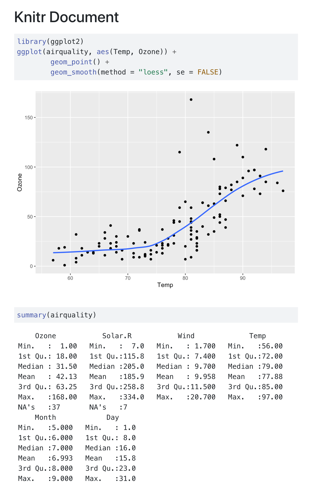

Running Code
Overview
Quarto supports executable code blocks within markdown. This allows you to create fully reproducible documents and reports—the code required to produce your output is part of the document itself, and is automatically re-run whenever the document is rendered.
There are currently two engines supported for running computations:
Jupyter, for running code from Python, Julia, and many other languages.
Knitr, for running code from R.
Extensive customization of code chunk output is supported, including the ability to hide code and/or output as well as fold code (make it visible only on demand).
Code Blocks
Code blocks that use braces around the language name (e.g. ```{python}) are executable, and will be run by Quarto during render. Here are a couple of simple examples in Python and R to illustrate (the output produced by the code block is shown on the Output tab):
Python (Jupyter)
---
title: "Jupyter Document"
format:
html:
code-background: true
jupyter: python3
---
```{python}
import matplotlib.pyplot as plt
plt.plot([1,2,3,4])
plt.show()
```
```{python}
import pandas as pd
d = {'one' : [1., 2., 3., 4.],
'two' : [4., 3., 2., 1.]}
df = pd.DataFrame(d)
df
```
Note that we added the code-background: true option to provide a background color for the code chunks (see the documentation on Code Block options for additional details on customizing code block output).
R (Knitr)
---
title: "Knitr Document"
format:
html:
code-background: true
execute:
warning: false
---
```{r}
library(ggplot2)
ggplot(airquality, aes(Temp, Ozone)) +
geom_point() +
geom_smooth(method = "loess", se = FALSE)
```
```{r}
summary(airquality)
```
Note that we added the execute: warning: false option to suppress printing of warnings. See Execution Options for additional details.
You can produce a wide variety of output types from executable code blocks, including:
Static plots (e.g. from matplotlib or ggplot2).
Interactive plots (e.g. from plotly or leaflet).
Tabular output (e.g. from printing R or Pandas data frames)
Plain text output (e.g. printing the results of statistical summaries).
Non-Executable Blocks
Note that code blocks that use convential markdown code block syntax (either ```python or ```{.python}) are not executable:
| Code Block Syntax | Executable? |
|---|---|
|
Yes |
|
No |
|
No |
Non-executable code blocks are printed but not executed.
Escaping
If you need to write about executable code blocks (e.g. a Quarto tutorial like this one) without the blocks themselves becoming executable, use two curly braces rather than one:
```{{python}}This will be output into the document as:
```{python}Rendering
Markdown
Quarto will automatically run computations in any markdown document that contains executable code blocks. For example, the Python example shown above might be rendered with:
quarto render jupyter-document.qmdThe R example might have been rendered with:
quarto render knitr-document.qmdNotebooks
The Python example above uses a markdown input file, Quarto can also render any Jupyter notebook (.ipynb):
quarto render jupyter-document.ipynbNote that when rendering an .ipynb Quarto will not execute the cells within the notebook by default (the presumption being that you already executed them while editing the notebook). If you want to execute the cells you can pass the --execute flag to render:
quarto render jupyter-document.ipynb --executeYou can also specify this behavior within the notebook’s YAML front matter:
---
title: "My Document"
execute: true
jupyter: python3
---Inline Code
Both Jupyter and Knitr support executing inline code within markdown (e.g. to allow narrative to automatically use the most up to date computations). The syntax for this varies across the engines.
Jupyter
To include executable expressions within markdown in a Jupyter notebook, you use IPython.display.Markdown to dynamically generate markdown from within an ordinary code cell. For example, if we have a variable radius we can use it within markdown as follows:
```{python}
#| echo: false
from IPython.display import Markdown
Markdown("""
## Circle
The radius of the circle is {radius}.
""".format(radius = radius))
```Note that we also include the echo: false option to ensure that the code used to generate markdown isn’t included in the final output.
Knitr
To include executable expressions within markdown for Knitr, enclose the expression in `r `. For example, if we have a variable radius we can use it within markdown as follows:
## Circle
The radius of the circle is `r radius`.Engine Binding
Earlier we said that the engine used for computations was determined automatically. You may want to customize this—for example you may want to use the Jupyter R kernel rather than Knitr, or you may want to use Knitr with Python code (via reticulate).
Here are the basic rules for automatic binding:
| Extension | Engine Binding |
|---|---|
| .qmd | Use Knitr engine if an Use Jupyter engine if an executable code block (e.g. Use no engine if no executable code blocks are discovered. |
| .ipynb | Jupyter engine |
| .Rmd | Knitr engine |
| .md | No engine |
You can override the engine used via the engine option. For example:
engine: jupyterengine: knitrYou can also specify that no execution engine should be used via engine: markdown.
The presence of the knitr or jupyter option will also override the default engine:
knitr: truejupyter: python3Variations with additional engine-specific options also work to override the default engine:
knitr:
opts_knit:
verbose: truejupyter:
kernelspec:
display_name: Python 3
language: python
name: python3